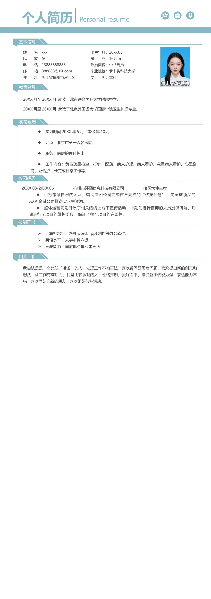

Personal resume
个人简历
出生年月：20xx.05
身 高：167cm
政治面貌：中共党员
毕业院校：萝卜头科技大学
学 历：本科
姓 名：xxx
民 族：汉
电 话：13888888888
邮 箱：888888@XX.com
住 址：浙江省杭州市滨江区
基本信息
教育背景
20XX 月至20XX 月 就读于北京联合国际大学附属中学。
20XX 月至20XX 月 就读于北京外国语大学国际学院卫生护理专业
。
实习经历
•
实习时间20XX 年5 月-20XX 年10 月：
•
地点：北京市第一人名医院。
•
职务：病房护理科护士
•
工作内容：负责药品检查、打针、配药、病人护理、病人看护、急重病人看护、心里咨
询、配合护士长完成日常工作等。
校园经历
20XX.03-20XX.06 杭州市泽熙信息科技有限公司 校园大使主席
•
目标带领自己的团队，辅助泽熙公司完成在各高校的“伏龙计划”，向全球顶尖的
AXA 金融公司推送实习生资源。
•
整体运营前期开展了相关的线上线下宣传活动，中期为进行咨询的人员提供讲解。后
期进行了项目的维护阶段，保证了整个项目的完整性。
技能证书
•
计算机水平：熟悉word、ppt 制作等办公软件。
•
英语水平：大学本科六级。
•
驾驶能力：国家机动车C 本驾照
自我评价
我自认是是一个比较“活泼”的人，处理工作不拘章法，喜欢带问题思考问题，喜欢提出新的创意和
想法，让工作充满活力。我是比较乐观的人，性格开朗，爱好看书，接受新事物能力强，表达能力不
错，喜欢同结交新的朋友，喜欢组织各种活动。